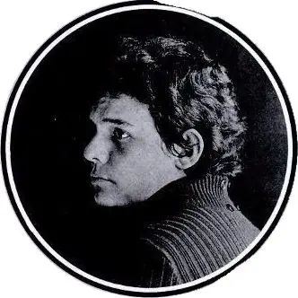

Homenaje a José José
José Rómulo Sosa Ortiz, fue conocido como "El Príncipe de la Canción", es uno de los cantantes más importantes, populares y exitosos de la historia de la música en español.

1948 — 2019El Príncipe
Homenaje a José José
José Rómulo Sosa Ortiz, fue conocido como "El Príncipe de la Canción", es uno de los cantantes más importantes, populares y exitosos de la historia de la música en español.
